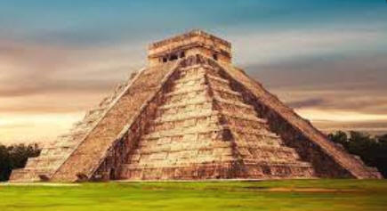

|
|
| Tourist spots in Mexico |
|
⚫Latin-american and Hispanic culture in Mexico ⚫Mexican Festivals ⚫Mexican Food ⚫Mexican Dance ⚫Mexican Clothing ⚫Tourist spots in Mexico ⚫Contact us for queries ⚫Back to Home page |
Mexico is a popular tourist destination with a wide range of attractions, from ancient ruins to beautiful beaches and vibrant cities. Here are some of the most famous tourist spots in Mexico: 1. Cancún and the Mayan Riviera: These resort destinations on the Gulf of Mexico offer beautiful beaches, water-based activities, and ancient Mayan ruins like Chichén Itzá. 2. Puerto Vallarta: This coastal city on the Pacific Ocean is known for its beaches, water sports, and nightlife. 3. Cabo San Lucas and the Los Cabos Corridor: These resort areas on the southern tip of the Baja California peninsula offer beautiful beaches, water sports, and outdoor activities like whale watching. 4. Tulum: This coastal town on the Caribbean Sea is known for its beautiful beaches and ancient Mayan ruins. 5. Mexico City: The capital of Mexico is a popular destination for its world-class museums, art galleries, and attractions like the Catedral Metropolitana and the historic city center. 6. Guanajuato: This colonial city in central Mexico is known for its colorful architecture, museums, and cultural events.  7. Oaxaca: This city in southern Mexico is known for its colonial architecture, vibrant markets, and cultural festivals.   8. Chichén Itzá: This ancient Mayan city in the Yucatán Peninsula is one of Mexico's most famous archaeological sites. 9. Cozumel: This island off the coast of the Yucatán Peninsula is known for its beaches, coral reefs, and water sports.  10. Merida: This colonial city in the Yucatán Peninsula is known for its colorful architecture, museums, and cultural events. 11. San Miguel de Allende: This colonial city in central Mexico is known for its beautiful architecture, art galleries, and cultural events. 12. Puebla: This colonial city in central Mexico is known for its colorful architecture, museums, and culinary scene. 13. Riviera Maya: This stretch of coastline on the Caribbean Sea is known for its beautiful beaches, water-based activities, and ancient Mayan ruins. 14. Copper Canyon: This series of canyons in northern Mexico is known for its beautiful scenery and outdoor activities like hiking and horseback riding. 15. Acapulco: This coastal city on the Pacific Ocean is known for its beaches, water sports, and nightlife.  16. Guadalajara: This city in western Mexico is known for its colonial architecture, museums, and cultural events like the Mariachi Festival. 17. Zacatecas: This colonial city in central Mexico is known for its beautiful architecture, museums, and cultural events. These are just a few of the many famous tourist spots in Mexico. Visitors to Mexico can enjoy a wide range of activities, from exploring ancient ruins to relaxing on beautiful beaches and experiencing vibrant cities. |